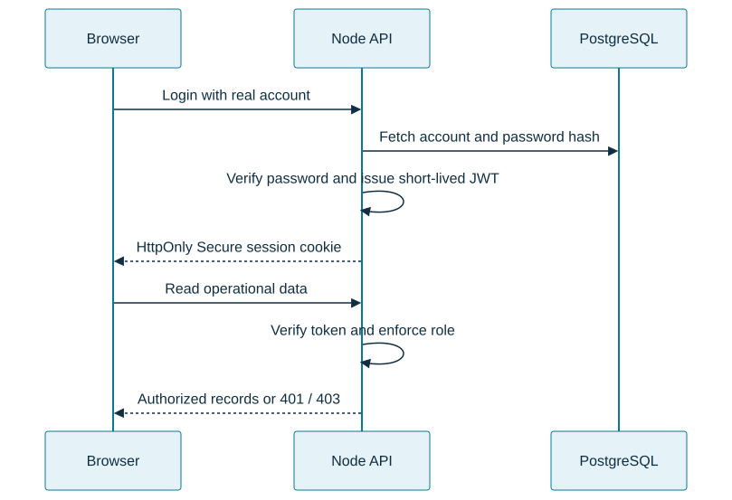

IMSOP System Diagrams
These rendered diagrams explain current runtime boundaries and source-backed request flows. Solid lines indicate implemented routing or data paths; the optional companion-service model is described explicitly rather than assumed active in every browser workflow.
1. Runtime and trust boundaries

Browser operations use the Node API. The gateway and .NET service foundation are packaged alongside it. A deployment template for an Azure dependency is not evidence that the live application uses it. Caddy terminates HTTPS and internal service ports remain private.
2. Real-account authentication

Demo authentication is a separate browser adapter. The real-account flow verifies token issuer, audience, expiry, and role server-side. UI visibility alone does not grant access.
3. Logistics event consistency

Idempotency uses a unique provider/event key. A tracking number identifies the shipment. The handler does not order events by occurrence time, so late events need integration-level handling.
4. Telemetry and reporting

Telemetry uses authenticated REST ingestion; it does not imply a commissioned MQTT or factory-control connection. Samples use server storage timestamps, while logistics records retain provider occurrence and API receipt timestamps.
5. Independent release and recovery

Backend updates are manual and independent from frontend releases. Restore a compatible tested image on failed acceptance; recover incompatible database changes through a separate restore plan.
Related references
- Architecture overview
- Database relationships
- API sequences and endpoint roles
- Visual deployment guide
- Oracle source runbook
Source review: 21 October 2026.